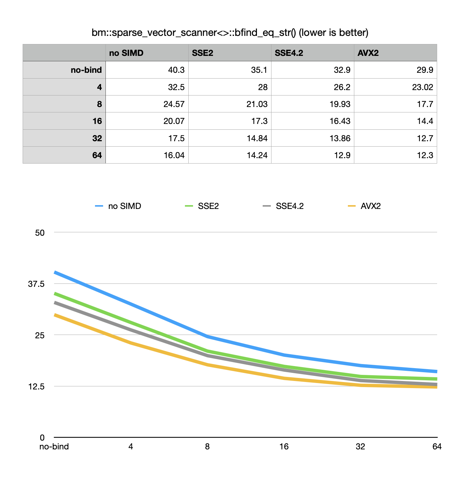

Version 7.12.3
July 14, 2022Release Notes
-
Fixed bugs related to handling of immutable bit-vectors
-
Fixed bug in Rank-Select index assisted
bvector<>::count_to() -
Implemented sparse vector read-only deserialization mode:
bm::sparse_vector_deserializer<>::set_finalization(bm::finalization::READONLY);svsample02 -
Optimizations: for
bvector<>::test( )membership testing (and changing) for GAP compressed blocks. BM implementation uses binary search (ONlogN) for this operation with SIMD optimizations (hybrid binary search). The algorithms around this problem were reviewed to minimize number of comparisons, better use L1 cache and improve speed. Performance gain of 10-20% measured on synthetic tests. -
Optimizations:
bm::aggregator<>SIMD and general purpose optimizations of aggregate AND-SUB operations. Group AND-SUB operation is at the core of succinct vector searches, inspired by Bloom filters but uses "data as an index approach" (works well for bit-sliced succinct vectors). Latest version adds various optimizations related to SIMD, parallel memory reads, algorithmically better detection of search reductions. -
Optimizations:
bm::sparse_vector_scanner<>::bfind_eq_str()- binary search in compressive memory vectors of strings. Implemented a new index for approximating the search using binary index. BM allows to setup a binding betweenbm::sparse_vector_scannerand a sperse vector itself, defining the fraction of elements to keep decompressed for the fast approximated search. Maintenance of a index fractionally reduces a memory efficiency, but significantly improves the search speed. New example was added to the code repo to illustrate the new API. strsvsample08.
Performance optimization details

Search in sorted (or unsorted) compressive vectors of strings is at the core of many algorithms related to dictionaries and indexes. The synthetic benchmark shown here reflects the speed improvements depending on the sampling factor of 4, 8, 16, 32 and 64 of elements (per each 64K of succinct vector entries) for the different variants of vectorization.
This is a synthetic benchmark, using a pseudo-randomly generated dataset, resulting in vector with substantial (but not overwhelming) compressibility.
Evidenced by the chart increase in approximate index sampling results in improvements in speed up until 32-64, at which point the return becomes deminishing. The specifics of a technical implementation of sparse vector scanned search is that it uses cascade of logical AND-SUB (AND - AND NOT) on the final stages of the search, where operation becomes memory bound (latency-bandwidth bound). CPU loads memory as L1 cache lanes (64+ bytes in size), so the deminishing return I explain as a memory latency actor (compute is fast, but RAM access is slow). Of cause this is an oversimplification and depends on the nature of our data as highly compressed vectors may show a somewhat different profile.
Version 7.11.2 with all the optimizations shows 3x better performance comparing to the previous version.
How does it compare against non-compressive binary search algorithms?
On the benchmarked data the non-compressive stock std::lower_bound() on sorted
std::vector<> would be faster (5 seconds vs 12 seconds), but at the cost of
significant (10x) memory consumption coming from various direct or indirect factors like memory
fragmentation. Overall some slowdown from using compressive data structures in real life applications
can be balanced with parallel MT algorithms.